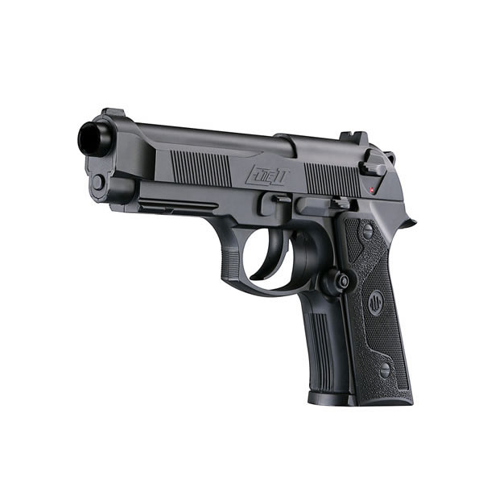

Беретта 92 (итал. Beretta 92, также Beretta 96 и Beretta 98) — семейство
самозарядных пистолетов, разработанных в 1972 году Карло Береттой, Джузеппе Мазетти
и Витторио Валле — опытнейшими мастерами огнестрельного оружия из итальянской
компании Beretta. Пистолет Beretta 92F калибра 9 мм по результатам конкурса
заменил в 1985 году пистолет M1911 45-го калибра в качестве стандартного пистолета
армии США с обозначением M9. По условию контракта М9 производится в Италии
, а также в США .
С 1985 по 1995 год США закупили для всех родов войск 1 020 257 пистолетов М9
по цене178,50 долларов за штуку.
- Масса, кг 0,950
- Длина, мм 217
- Длина ствола, мм 125
- Ширина, мм 38
- Высота, мм 137
- Патрон 9×19 мм
- Калибр, мм 9
- Принципы работы отдача при коротком ходе ствола, рычажное запирание. ударно-спусковой механизм двойного действия
- Начальная скорость пули, м/с 390
- Вид боепитания двухрядный магазин на 15 патр.